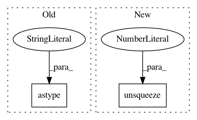

d000bae3a03681b11818e98c29a64a145e0ff1ec,torchsample/modules/example.py,,,#,10
Before Change
x_train = x_train / 255.
x_test = x_test / 255.
x_train = np.expand_dims(x_train,1).astype("float32")
x_test = np.expand_dims(x_test,1).astype("float32")
x_train = torch.from_numpy(x_train[:10000])
y_train = torch.from_numpy(y_train[:10000])
x_test = torch.from_numpy(x_test[:1000])
After Change
x_train = x_train / 255.
x_test = x_test / 255.
x_train = x_train.unsqueeze(1)
x_test = x_test.unsqueeze(1)
// only train on a subset
x_train = x_train[:10000]
In pattern: SUPERPATTERN
Frequency: 3
Non-data size: 2
Instances
Project Name: ncullen93/torchsample
Commit Name: d000bae3a03681b11818e98c29a64a145e0ff1ec
Time: 2017-04-20
Author: ncullen@modv-vlan533.0018.apn.wlan.med.upenn.edu
File Name: torchsample/modules/example.py
Class Name:
Method Name:
Project Name: allenai/allennlp
Commit Name: e2f66c0de2600308044ec3ab7731dae9017378fa
Time: 2018-12-20
Author: vidurj@allenai.org
File Name: allennlp/modules/seq2seq_encoders/bidirectional_language_model_transformer.py
Class Name:
Method Name: subsequent_mask
Project Name: jadore801120/attention-is-all-you-need-pytorch
Commit Name: bed0a0ae26451c9897cf1ee0f7302e42eba9b42c
Time: 2018-08-23
Author: yhhuang@nlg.csie.ntu.edu.tw
File Name: transformer/Models.py
Class Name:
Method Name: get_attn_subsequent_mask